Main experiments during the first term
The main goal of our project is to implement the core architecture of PEACH and a test data generator, so we focused on the deployment of the system and usability of the previous data generator. The following paragraphs stated our progress in the experiments and future plan.
-
DC/OS redeployment
To provide the environment for the future development and meet the initial requirements from our client, our team spared no efforts in redeploying the previous architecture based on DC/OS. According to our client’s description, it should have be an easy task because Microsoft Azure has provided templates for such development. However, it took us long to figure out all the restrictions, since the service provided by Microsoft varies in different regions.
Test 1: Directly deployment in UK region with Azure build-in service
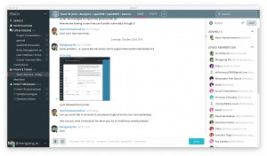
Result: Failure
Details: We tried in all the UK servers, while the Microsoft Azure UK didn’t support the container service.
Solution: We reported the fact to our client and got suggestion to use normal deployment with DC/OS templates.
Test 2: DC/OS deployment with templates
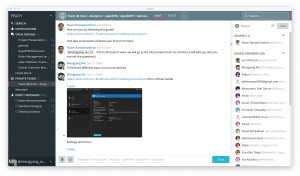 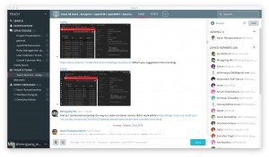 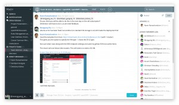 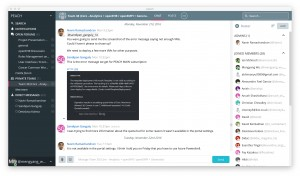
Result:Failure
Details: We tried to deploy the templates on the MS Azure.(https://downloads.dcos.io/dcos/stable/azure.html), while other errors were returned. The key issues are the restrictions in the use of a specific kind of Linux VM.
Solutions: We started to contact MS UK to get some service unlocked or other solutions.
Test 3: Deployment after Microsoft’s update on their service

Result: Success
Details: In the early November, we are informed by Microsoft that they allowed the usage of the version Linux we are supposed to use. So the restrictions are moved.
We finally deployed a running DC/OS system successfully, which means we have the basic environment to conduct other experiments on the service like Kafka and Spark.
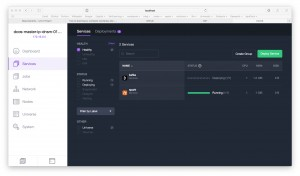
-
Import NiFi template
Result: Partly Success
Details: At the same time when we deployed DC/OS, we did experiments on using NiFi to process the data stream. The previous team left a template while the documentation is not quite clear, so we started from installing NiFi and testing based on local server.
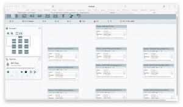
The NiFi official documents online helped us a lot at the initial stage. We imported their previous templates successfully. However, we were not able to test their functions because of the 27 errors in their templates. So we must solve all the bugs on templates first.
-
Generator function test
Beside of the main architecture, the other major requirement for us is to develop a data generator. As we cannot use real medical data in the future test, all the test data should be anonymous but rational. One way to achieve that is to use some real data as input and modify them slightly. The other is to generate novel data with some input factors. We have a previous version of code generator, which was designed to implement in both way. To exam the degree of completion of the previous one, we conducted experiments on both functions.
Test 1: Function to generate data based on real data
Result: Success
Details: It took long for us to recompile all the code from GitLab. The simple but clear GUI provides two options.
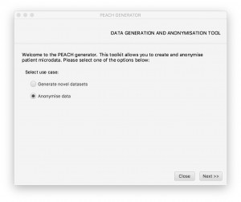
We tested the second function on the screen, which leads us to a data upload page. We made a test file with real data include name, gender and so on. The system worked fine and did what we expected. Finally we got the output data saved in the target folder.
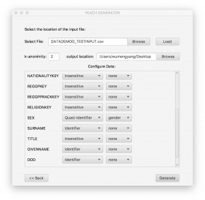 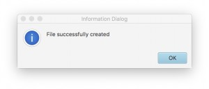
Test 2: Function to generate novel data
Result: Failure
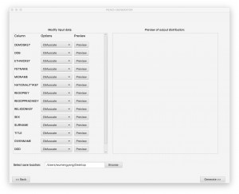 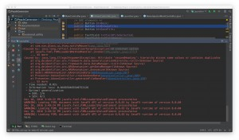
Details: When we tried the ‘Generate novel datasets’ function, we could upload files and set factors on the generator, but nothing happened after we clicked generate. The command lines in our IDE returned a message for locating somewhere in the code, which means this function might be in the process of debugging.
-
Summary
During the three months, we did experiments on the deployment, several subsystem in our architecture and previous generator. The results shows that although much work has been done before our participants, the degree of completion is still in a very low level.
Firstly about the main architecture, the deployment is said to be easy according to our client, but there is still large workload for the implementation, let alone further improvement on the data processing. The DC/OS is a latest technique to support large groups of servers, and it will take time to update and complete itself. The components in the system (NiFi, Spark, Kafka etc.) are tools to control the data flow, which need a more specific descriptions on their relationship and how to make connections. These all need more experiments in the future.
As for the generator, we are glad to see some of the functions work fines that we can concentrate on fixing other parts as soon as possible. As the test data generator in the future, it will play a significant role in our testing strategies.
-
Future plan in experiments
Implementation of data flow between NiFi and Kafka.
Currently our NiFi is independent of the Kafka server. To make the pipeline work in the future, we need a attempt to build data flow from NiFi to Kafka. In our hypothesis, NiFi will digest different types testing data(eg. radiology data) and reorganize them into formats which can be accepted by Kafka. Kafka takes these data and classifies them for other usages.
Kafka interaction with Spark and Druid
Working as a distributed message system, Kafka holds the data which other applications can subscribe for their local analysis. We will build such relationships between Kafka and other functional application in DC/OS system. The experiments will be on both synchronous and asynchronous data transport.
Speed of data processing in each components and the whole system
If we finish all the experiments above, we will move forward to test the speed of data processing in our pipeline. The detailed test strategies are stated in Testing Strategies section on our website. With the initial speed, we can apply our methods to improve the way to process data.
Experiment logs
| No. | Title | Details | Results | Done by | Date |
| 1 | DC/OS Deployment | Deploy directly with normal Microsoft Azure service (UK South) | Failure | Everyone | 22/10/2016 |
| 2 | DC/OS Deployment | Deploy DC/OS with templates on Azure (UK South) | Failure | Everyone | 22/10/2016 |
| 3 | DC/OS Deployment | Deploy DC/OS with normal Microsoft Azure service (US) | Success | Mengyang & Sandipan | 28/10/2016 |
| 4 | DC/OS Deployment | Deploy DC/OS with templates on Azure (UK South) | Success | Mengyang & Sandipan | 11/11/2016 |
| 5 | Spark Installation | Insall Spark on DC/OS | Success | Mengyang & Sandipan | 13/11/2016 |
| 6 | Generator Testing | Test the previous generator – functions 1 | Success | Mengyang | 27/11/2016 |
| 7 | Generator Testing | Test the previous generator – functions 2 | Failure | Mengyang | 27/11/2016 |
| 8 | NiFi Installation | Install Apache NiFi | Success | Everyone | 25/11/2016 |
| 9 | NiFi Template import | Import the previous Nifi template to Nifi server based on our own laptop | Success | Mengyang | 25/11/2016 |
| 10 | Nifi Template Testing | Test the function of previous Nifi Template | Failure | Mengyang | 25/11/2016 |